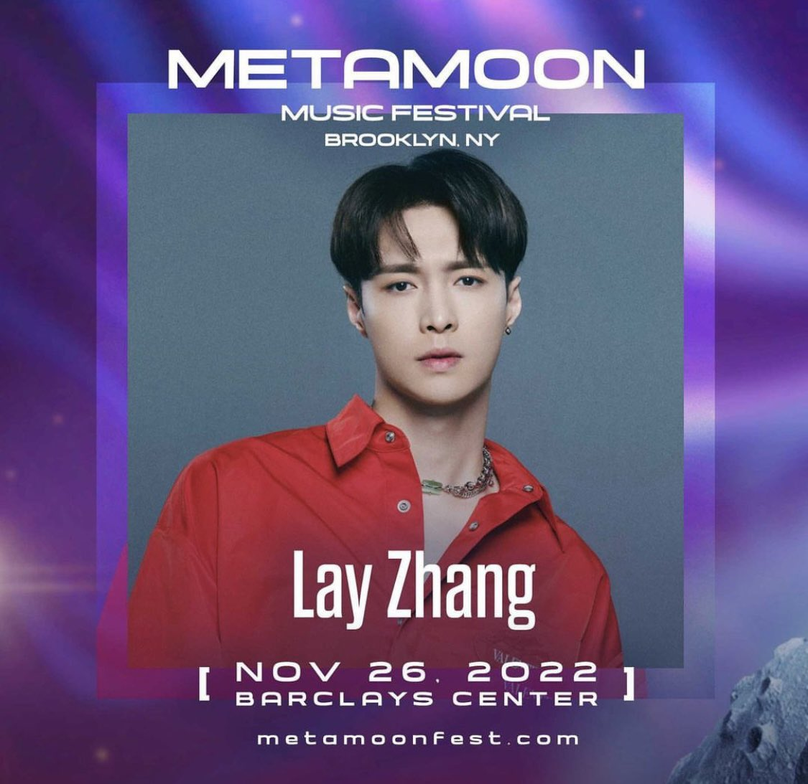
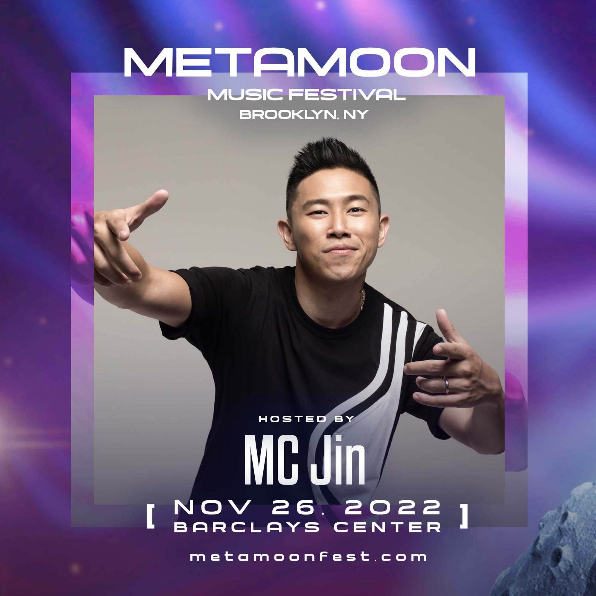
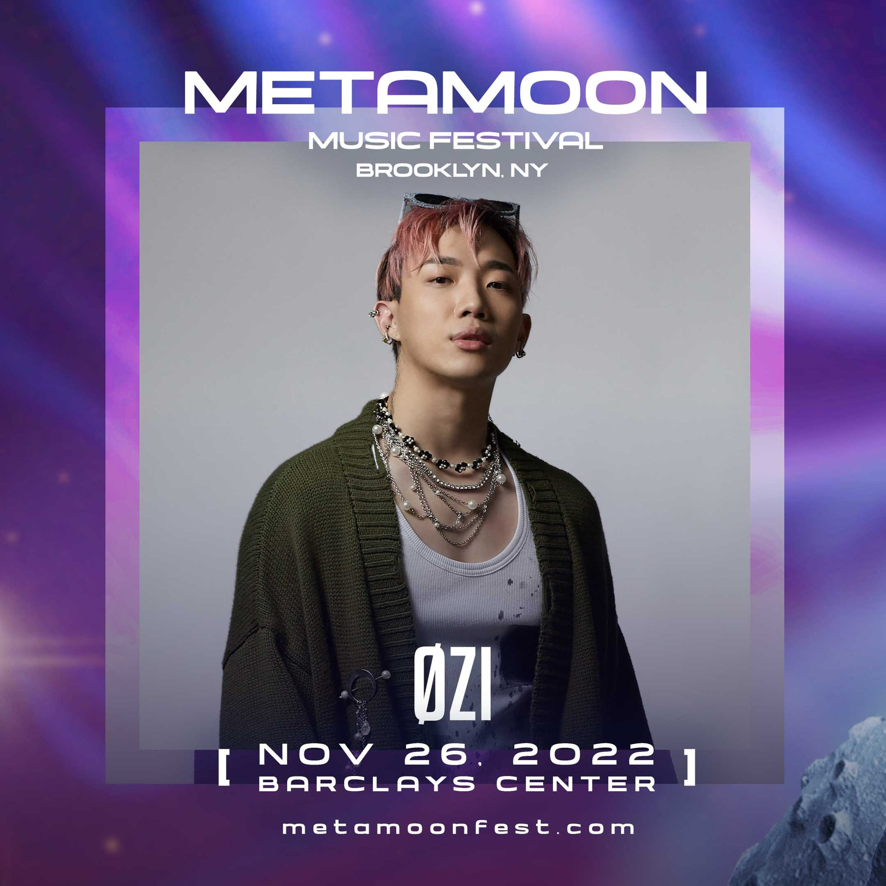
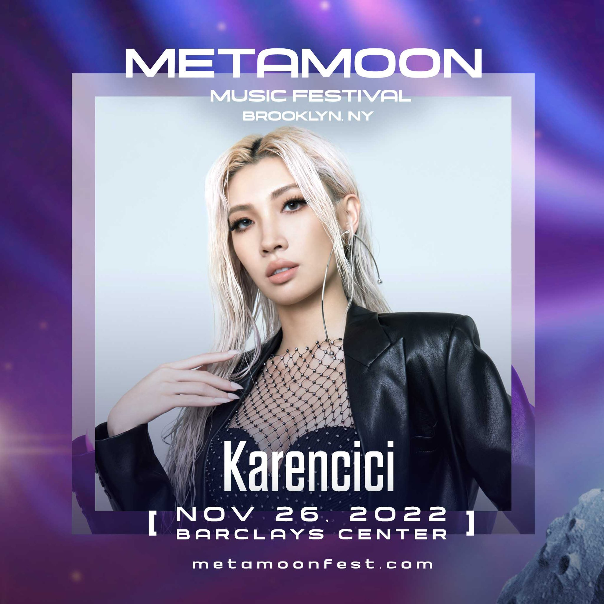
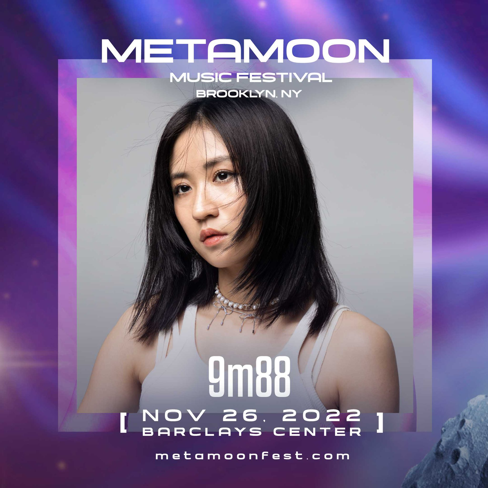
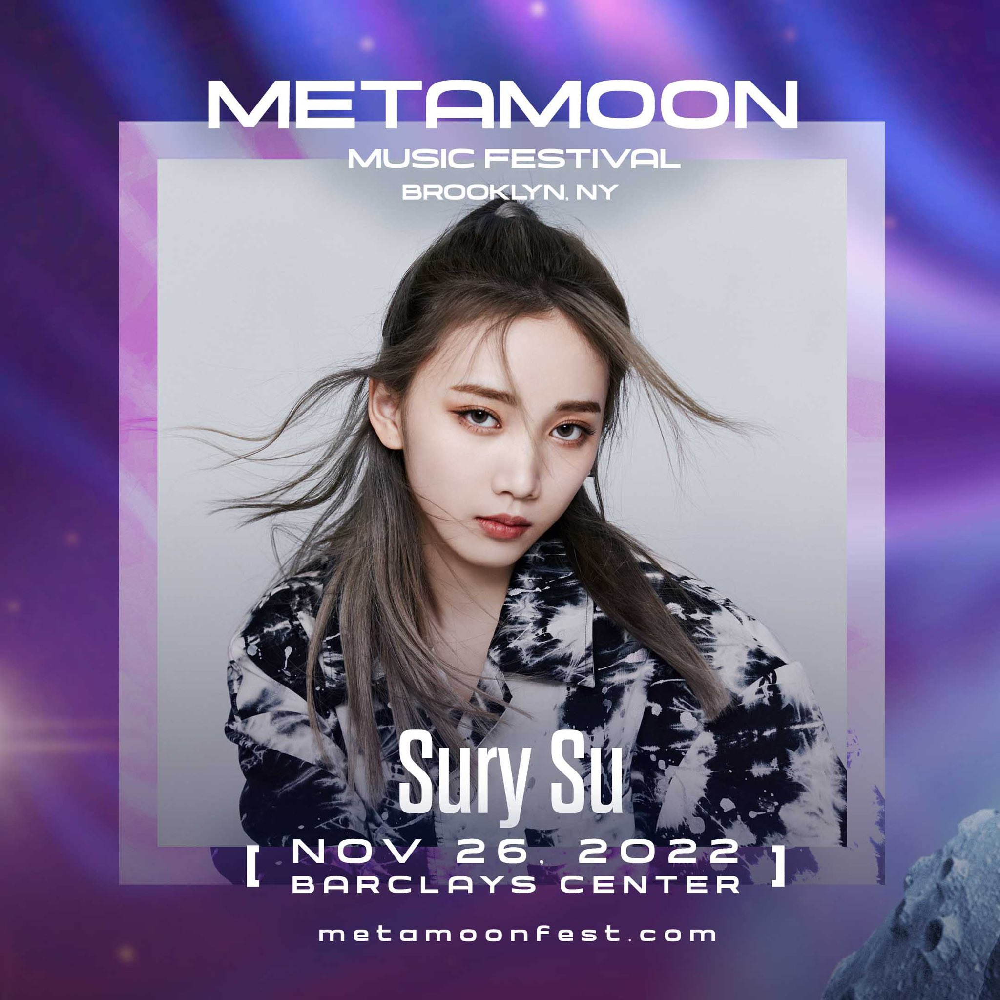

There's nothing in the world better than sipping on a cold one, soaking up the sun while listening to your favorite musical artists belt out tunes. If you are a fan of live music, then you understand the draw of music festivals. Music festivals are all about living in that moment, where nothing else matters but the music, the bands and the camaraderie that comes along with it all. And if you're a fan the concert experience, it's always a good time to snag a few music festival tickets. Fortunately, StubHub has you covered for all the major music festivals, including Coachella, Lollapalooza, Bonnaroo and many more. Buy a music festival ticket between May 1 and Oct. 15, 2019 and get 15% off your next concert purchase.
Join these men and women in their

Zhang Yixing is a male pop singer, film actor and music producer in mainland China. He is a member of South Korean boy band EXO/EXO-M. He is the lead dancer, assistant vocalist and instrument player in the team. Zhang made his debut as a member of EXO group and its subsidiary EXO-M in April 2012. In 2015, he set up his own studio in China and shifted his focus to China, where he later gained widespread attention for his role in the inspirational reality TV show Extreme Challenge. His film and television works include The Founding of an Army, Lao Jiu Men, Time of Meeting, etc., and his music works include I NEED U, The Dream Never Rains in the Forest, Lotus, etc.

Ouyang Jing, stage name: MC Jin, English name: Jin Tha MC, Jin The Emcee100, Grand Jin ABC Jin He's a rapper, and on top of that -- he's Ruff Ryder. Jin was right. It was Ruff Ryders. The next album released by The major rap label was a Chinese solo album, The Rest Is History. True to the album's title, JIN's ambition is clear: just as Big Pun put the Latin world on the rap map, just as Eminem put white people into the rap game, JIN is behind the whole Chinese, the whole Asian hip-hop culture background. He is the face of AsiAn-American hip-hop culture, like Yao Ming playing in the NBA, JIN is the yellow blood of black hip-hop culture in the continental United States.

ø ZI is a talented singer with a strong musical background. His works are very popular among young people. He participates in, produces and arranges songs by himself, and the songs of 9M88 are also very good. R&B music style makes Chinese music add new things. The key factors for ZI to be nominated for the 30th Golden Melody Awards in Taiwan include high production standards, sufficient personal charisma, and the market reaction of his work, which was also recognized. ø ZI's performance was brilliant. Both the arrangement and singing were excellent.

The latest singer-songwriter trained by Huayan International Music, a little girl born after 90 exudes a distinctive musical personality. Lin Kailun's music temperament is a combination of Chinese and Western, not only can sing folk songs and explain the faint sadness, but also can burst out of the power of hoarse blasting and wild music. In August 2016, Lin participated in the blind audition of "China's New Song". Unlike other girls, Lin is a cool girl. She likes cool music more, so she writes songs with some dark style. "I like cool things myself, like leather jackets," and "I can't do my nails because I have to play the guitar, and it's really cool for girls to sing with guitars on their backs." She performed the song "What Is Love" in the China Good Song scene, and was finally recognized by her tutor.

9M88, formerly known as Yuqi Tang, was born in 1990 in Taipei, Taiwan Province. She is a Taiwanese female singer, actress and host. In 2016, he wrote the lyrics for the single "Accompany You on Holiday" released by singer Leo King. In 2017, he released his solo single "Nine Heads, Body, Nisei". In 2018, I participated in the "2018Simple Dreams Shanghai Simple Life Festival". In 2019, he released his first full-composition album Beyond Mediocrity, with which he was nominated for two awards including Best New Artist at the 31st Taiwan Golden Melody Awards [1], and four awards including Best New Artist at the 11th Golden Melody Awards, and won the Best New Artist Award [2-3]. In 2020, the concert tour "9M88 and Her Time" will be held.

Su Ruiqi, born on August 20, 2000 in Chengdu, Sichuan Province, is a female pop singer from the Chinese mainland and a member of Chic Chili. In 2017, she became a member of ETM_OrangE. In 2018, she participated in the youth growth program "Create 101" of Tencent video girl group, and finally achieved the 25th place in the third stage. On September 30, join Chic Chili, a girl singing group. In 2019, Chic Chili S&R released their debut music EP SAME with Liu Renyu; April, published the first personal portrait "Adventure". In 2020, she participated in the growth program "Creation Camp 2020" of Tencent video energy female group and won the 11th place in the final. In 2021, he released his single "Reaching for the Stars"; In the same year, as one of the 33 Chinese contestants, she took part in the Girls Planet 999 selection program of China, Japan and South Korea, and finally won the 13th place.
See our fantastic lineup!
The concert has begun.
The inaugural MetaMoon Music Festival comes to Brooklyn on November 26 featuring Lay Zhang, 9m88, Karencici, ØZI, Sury Su and more guests to be announced. Hosted by MC Jin.
Lay zhang
Lay zhang singing.
9m88
9m88 singing.9m88 singing
ø ZI
ø ZI singing.
Break
Karencici
Karencici singing.
Sury Su
Sury Su singing.
MC Jin
MC Jin singing.
Take a bow
The grand music festival has come to an end.
Located at Barclays Center
The Barclays Center is a multipurpose indoor sports arena in Brooklyn, New York. Part of the building sits on the MTA's inspection site on Atlanta Avenue.